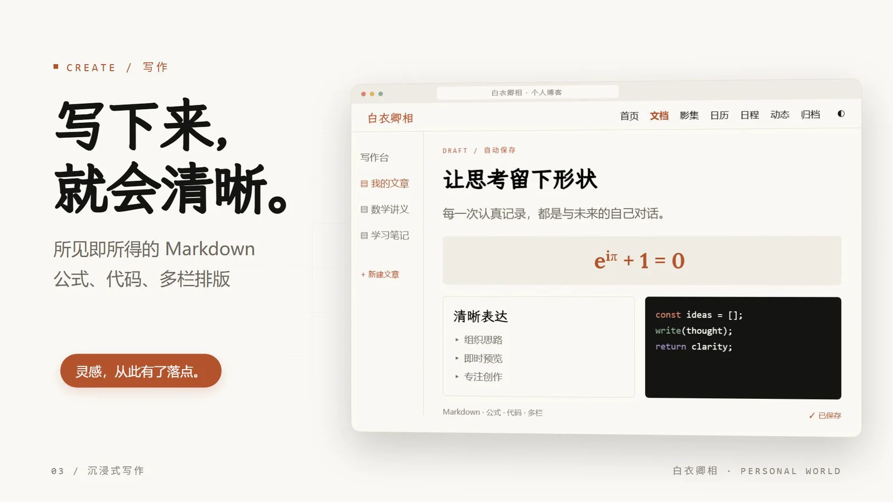
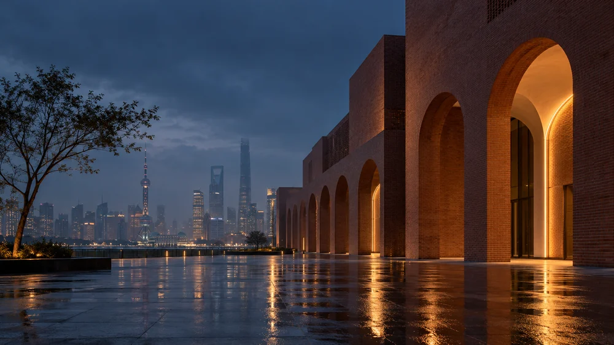
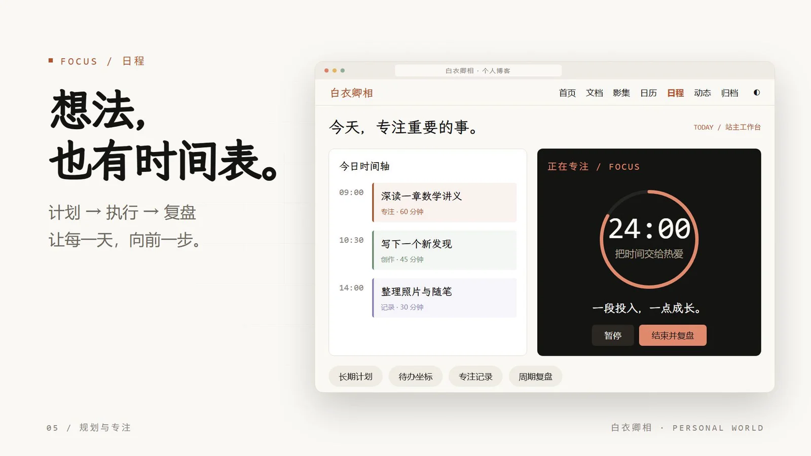

白衣卿相 / PERSONAL WORLD关于这个项目
给好奇一个去处，
给生活留一点回声。
一篇文章，一段推导，一张照片。
那些认真想过、走过、见过的事，值得慢慢积累。
从一篇文章，
到一套知识。
写技术，学数学，记录新的发现。
内容有层次，阅读也有自己的节奏。
长文，也有清晰的路径。
树形目录、全站搜索与多种阅读布局，让每次回看都能找到想要的那一段。
eiπ + 1 = 0
让推导，完整发生。
从直觉到证明，用清晰的数学表达和有结构的讲义，把理解一步步写下来。
积累的东西，随时找回。
沿着时间与标签回看，让零散的学习笔记，逐渐成为自己的知识地图。
写下来，
想法就有了形状。
用 Markdown 创作，让代码、公式与图片，
自然融入每一次表达。

即时渲染自动保存专注表达
把生活，
留在画面里。
有些故事无需长篇。
一张照片，一句随笔，就足够记住。

影集与时间线，把值得记住的瞬间，
慢慢收进生活的相册。
站主专属工作台给热爱，
给热爱，
安排一点时间。
从一个目标，到一段投入，再到一次回看。
把想做的事，放进真实的每一天。

01计划与安排
把目标拆成任务，安排时间，在今日视图里看清接下来要做的事。
02专注与投入
启动专注计时，留下投入记录，让每一段认真做事的时间有迹可循。
03回看与复盘
回顾任务、计划与投入，整理进展，找到下一步值得继续的方向。
04随心录
先记下一个念头，再用标签与回看慢慢整理。灵感来时，总有地方安放。
用 56 秒，
走进这个世界。
《把思考，变成自己的世界。》
一支关于记录、创作与热爱的短片。
原创配乐版 · 界面为功能演示重构，风景为生成素材。
白衣卿相
自己的世界，
从一次记录开始。
为好奇留下位置。READ. WRITE. LIVE.